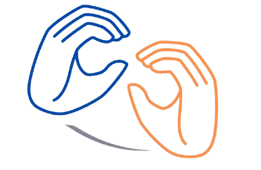
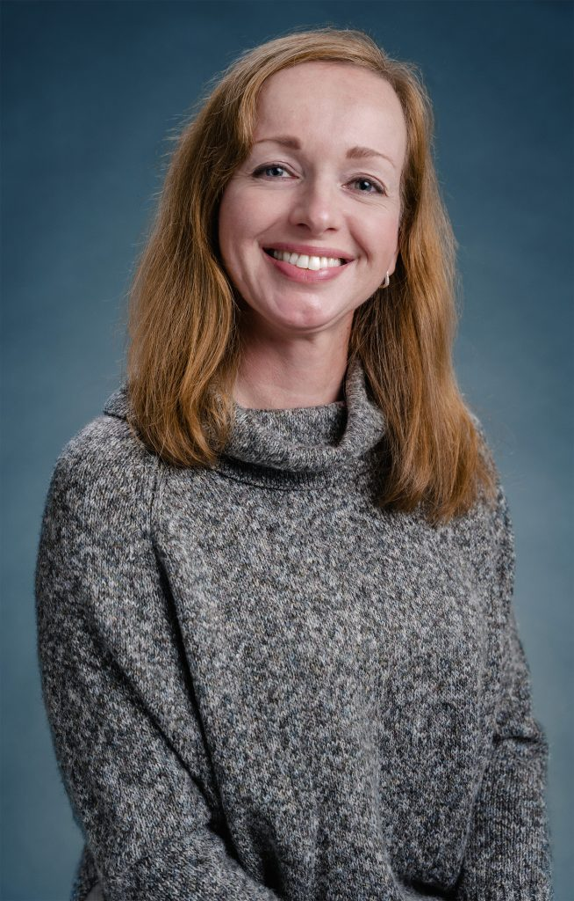
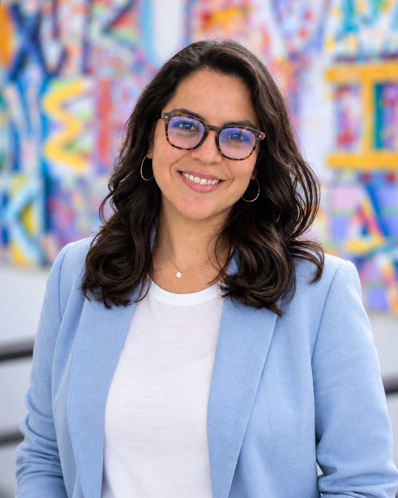
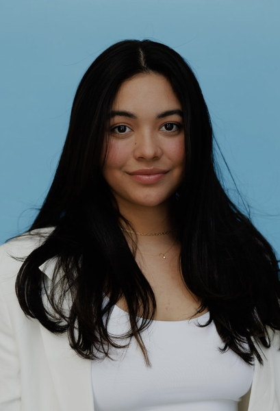
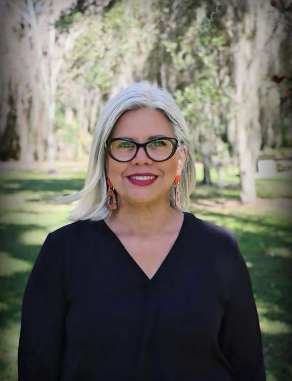

Tell us a little about yourself
Complete a brief background questionnaire about language use, education, and identity. The questionnaire is also available in ASL.

English Deaf CorpusUNIVERSITY OF FLORIDA · CORPUS LINGUISTICS LAB
Help us recognize the diversity of English writing in Deaf and Hard of Hearing communities.
For Deaf and Hard of Hearing adults · Fully online · Voluntary
Hello! Welcome to the English Deaf Corpus.
My name is Zulma Santiago. I am a Deaf faculty member at the University of Florida and a collaborator on this research project.
Our goal is to collect authentic English writing from diverse Deaf and Hard of Hearing adults. Your writing can help researchers and educators better understand and value the different ways our communities use English—not as deficits, but as linguistic diversity.
You may participate if you are 18 or older, identify as Deaf or Hard of Hearing, and can complete the study in English. Participation is online and includes a short background questionnaire and one to six writing prompts.
Participation is voluntary, and your information will be anonymized and stored securely.
Your writing matters. Click the participation link to learn more. Thank you!
A collection built to understand writing,
and value the people behind it.
01 / THE PROJECT
A corpus is an organized collection of texts. Ours brings together authentic English writing produced by Deaf and Hard of Hearing adults.
Many ideas about writing have been developed without enough representation from Deaf and Hard of Hearing communities. This University of Florida project seeks to help address that gap.
By sharing their writing, participants can help researchers and educators develop a more complete and inclusive understanding of English writing—recognizing linguistic diversity rather than treating differences as deficits.
02 / TAKE PART
Choose how much you write.
Take part from wherever you are.
The link opens the study in Qualtrics.
Complete a brief background questionnaire about language use, education, and identity. The questionnaire is also available in ASL.
Respond to between one and six open-ended writing prompts. You choose how many prompts to complete.
Your writing will help build a resource for future research into language, literacy, and education.
BEFORE YOU DECIDE
Yes. You may decline to participate or withdraw your consent at any time without consequences.
There is no direct financial benefit or payment for participating in this study.
Your written responses and background questionnaire information will be anonymized and stored securely in a password-protected University of Florida Dropbox folder accessible only to the research team. Anonymized texts and survey responses may be used in future research or shared with researchers whose work has received appropriate Institutional Review Board approval.
Yes. You can share the study link or the recruitment poster through your organization or community networks. Contact Angela if you would like help.

Dr. Stefanie Wulff is a faculty member in the Department of Linguistics at the University of Florida. Her research focuses on language use, linguistic variation, second language development, and corpus-based approaches to language research.
Email: swulff@ufl.edu

Angela Hinojosa is a doctoral candidate in Special Education at the University of Florida. Her work focuses on language, literacy, writing, and the educational experiences of Deaf and Hard of Hearing students and communities.
Email: a.hinojosa@ufl.edu
Ethan Gomez is a Data Science major and Linguistics minor (B.S.) at the University of Florida. He helps support the technology behind the English Deaf Corpus, including the project's survey and website.
Email: ethangomez@ufl.edu

Rebecca Vides is a Hard of Hearing Doctor of Audiology student in the Department of Speech, Language, and Hearing Sciences at the University of Florida College of Public Health and Health Professions.
She supports the English Deaf Corpus by helping make project information and study materials accessible in ASL. She also contributes her professional knowledge and lived experience as a Hard of Hearing person.
Email: rebeccavides@ufl.edu

Zulma "Yary" Santiago is a Deaf Instructional Associate Professor in the Department of Speech, Language, and Hearing Sciences at the University of Florida College of Public Health and Health Professions.
She contributes her professional expertise, her lived experience as a Deaf person, and her commitment to accessible communication and engagement with Deaf and Hard of Hearing communities.
Email: zsantiagozayas@ufl.edu
For questions about the study, participation, accessibility, or the English Deaf Corpus project, please contact:
Angela Hinojosa
Email: a.hinojosa@ufl.edu
You may also contact the Principal Investigator:
Stefanie Wulff, Ph.D.
Email: swulff@ufl.edu
For questions about your rights as a research participant, contact the University of Florida Institutional Review Board:
University of Florida IRB02
Email: irb2@ufl.edu
Phone: 352-273-9600
ENGLISH DEAF CORPUS
Help build a fuller picture of English in Deaf and Hard of Hearing communities.
Explore the study ↗